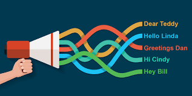

Does AI Know What You Want Before You Do? The Power of Personalized Marketing
AI-driven personalized marketing is reshaping how businesses anticipate and respond to consumer desires. Have you ever searched for a product online, only to be bombarded with ads for similar items shortly after? Or perhaps you’ve discovered a brand you love through an eerily well-timed recommendation? This isn’t magic—it’s artificial intelligence at work, predicting what you want before you even realize it yourself.
How AI Anticipates Consumer Desires
AI-powered marketing thrives on data. Every digital action—from the websites you visit to the items you add to your cart—feeds machine learning models designed to predict consumer behavior. The goal? To understand your needs so well that AI can serve you the perfect ad at just the right moment.
The AI Personalization Process

- Data Collection: AI gathers data from search history, online purchases, social media activity, and even location tracking.
- Behavioral Analysis: AI studies patterns in user behavior, learning from past interactions to make informed predictions.
- Predictive Analytics: Machine learning models use historical data to forecast what products or services a user might want next.
- Real-Time Recommendations: AI-driven systems generate personalized ads, emails, or product suggestions based on current and past behavior.
- Continuous Learning: AI refines its recommendations by analyzing engagement—whether a user clicks, buys, or ignores certain ads.
This process results in hyper-personalized marketing that often feels like AI is reading your mind.
When AI Gets It Right
AI-driven personalization has revolutionized marketing, making shopping experiences more seamless and enjoyable. Here’s where it excels:
Enhanced Relevance: Instead of bombarding users with random ads, AI ensures they see products that align with their interests. If you frequently browse skincare products, expect to see promotions from beauty brands rather than unrelated items.
Efficient Advertising: Companies save money by targeting likely buyers instead of wasting resources on broad, unfocused campaigns.
Discovering New Favorites: AI introduces consumers to brands and products they might not have encountered otherwise, helping small businesses reach the right audience.
Timing Perfection: AI knows when to present offers. If you’ve been researching vacation destinations, you might receive timely promotions for flights or hotels just before you book. ## When AI Gets It Wrong Despite its capabilities, AI is far from perfect. Here’s where it can fall short:
Intrusiveness: The feeling of being “watched” can be unsettling. Many users wonder if their devices are listening to their conversations, even though AI typically relies on behavioral data rather than audio surveillance.
Misinterpretation of Intent: Just because you searched for a baby stroller for a friend’s baby shower doesn’t mean you want baby product ads for months.
Bias and Ethical Concerns: AI can reflect societal biases present in its training data, leading to unfair targeting. For instance, certain demographics may see more credit card ads while others receive more loan offers.
Over-Personalization: Sometimes, AI recommendations can feel limiting. If AI only shows you content similar to past behavior, it can create an echo chamber, preventing discovery of new interests.
The Ethical Debate: Too Much Power?
How much should AI influence consumer choices? While personalization can enhance shopping experiences, excessive targeting raises ethical questions: * Should AI target users based on sensitive factors like income, health, or political views? * Are companies transparent about how they use AI to track and influence consumer behavior? * Do consumers have enough control over their data and the ads they see?
Some companies, like Apple, are pushing for stricter privacy measures, limiting AI’s ability to track users across apps. However, many businesses still rely on AI-driven advertising for revenue, creating a tension between privacy and profit.
Striking a Balance: Responsible AI in Marketing
To use AI-driven personalization effectively without overstepping boundaries, businesses should consider: * Transparency: Clearly informing users about data collection and giving them control over their privacy settings. * Ethical AI Training: Ensuring AI models are trained on diverse, unbiased data to avoid discrimination in ad targeting. * User Control: Allowing consumers to customize their preferences rather than being subjected to AI’s assumptions. * Balanced Automation: Combining AI insights with human oversight to maintain ethical and effective marketing strategies.
The Future of AI in Personalized Marketing
AI’s ability to predict consumer desires is only getting more advanced. The challenge lies in ensuring that this power benefits both businesses and consumers without crossing ethical lines. As AI-driven personalization evolves, the key question remains: how much influence should AI have over our choices?
In the end, AI doesn’t truly “know” what you want—it simply analyzes patterns and probabilities. But as those patterns become more precise, it may start feeling like AI knows you better than you know yourself.